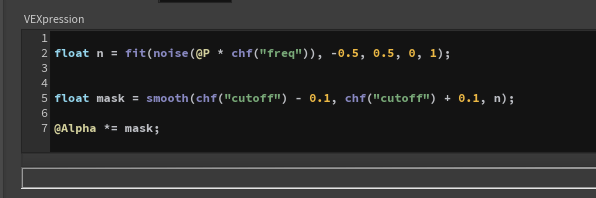

第 8 周
团队成员
Yiqi Zheng（特效）
Riley Ho（特效）
Itim Kongsakulvatanasook（特效）
Sofia Mancias（合成）
2 月 29 日
Benji Hopkins（外观开发）
SCAD × HARBOR × ETC － 第 8 周
大家好，这是我 SCAD × Harbor × ETC 部落格的第八周！
以下是周二简报后导师们的回馈。
Kyle：
-
镜头 1：红色看起来不错，地面或许可以更多彩一点，目前上半部太抢眼
-
镜头 2：左侧光线太亮，要和右侧一致
-
加强雷射的音效
-
镜头 3 的遮罩羽化效果不理想，要怎么把羽化藏起来？
-
镜头 3 的灯光或许可以更有氛围
-
也许根本不需要最后那幅画，粒子看起来更酷
-
让镜头 4 的粒子更平滑
-
确保镜头 4 的背景和其他镜头一致
Beck：
-
也许可以转移颜色，而不是换不同的材质？
-
粒子和遮罩看起来脱节
-
粒子和遮罩的颜色也不一样
-
收尾镜头非常亮
-
镜头 4 的粒子看起来没有阴影
-
镜头 4 看起来像翻页动画
-
粒子要有更多变化
-
木纹贴图解析度要提高，看起来比印表机本身品质差
-
想想木件上木纹的方向
-
木头的倒角边缘需要更多凹凸
Hailey：
-
镜头 4 需要一点颜色
-
也许可以把小画作放在印表机旁边，增添一点色彩亮点
-
或让颜色来自收尾时细微的粒子
Molly：
-
镜头 1，粒子的管状造型还在调整吗？
-
部分物件需要细微的倒角，尤其是木头
-
镜头 3 在粒子出现前显得死气沉沉
-
镜头 3 开头或许可以再加一盏灯
-
镜头 4 用三点打光，而不是只有一盏大灯，或许加入一点像其他镜头那样细微的颜色
-
灰色但带一点蓝，颜色不要太多
Drew：
-
镜头 1，粒子需要动态模糊，尤其是白色粒子
Billy：


待办事项：
-
调整粒子的路径与流动形状（加入 noise）
-
为镜头 1 降噪
-
避免过曝。
这是我们第 8 周的预视（Previs）。
我在粒子流周围测试了几层额外的粒子，但视觉效果不理想，所以我们决定拿掉。
Claude 也协助我调整设定的几个部分，减少粒子看起来像细线的问题。我发现这种线状效果是因为某些区域粒子密度太高，让它们在视觉上融在一起。

这段程式用以位置为基础的 noise 产生平滑遮罩，再套用到 Alpha，让透明度逐渐变化，形成自然的溶解效果。

这段程式检查每个点周围有多少相邻粒子，把密度重新映射到 0–1 范围，并在密集区域随机删除点，减少聚集，让粒子分布看起来更自然。

这段程式先设定基础 alpha 值，再用以粒子年龄（@nage）驱动的 ramp 控制随时间变化的透明度，让粒子随年龄渐渐淡出。最后把 alpha 值存进 @Tm，方便视觉化或进一步控制。